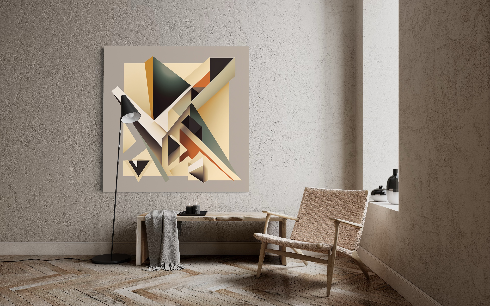
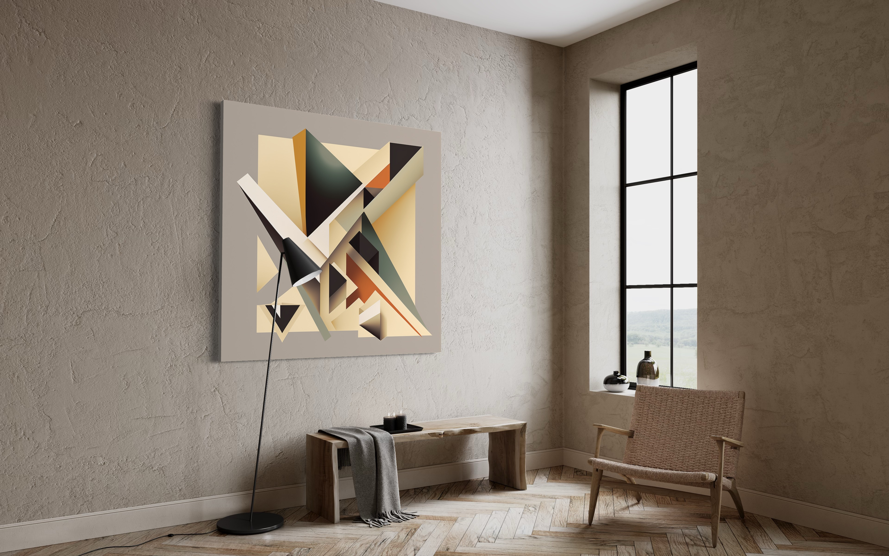
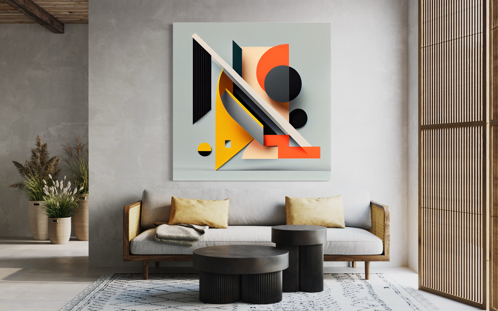
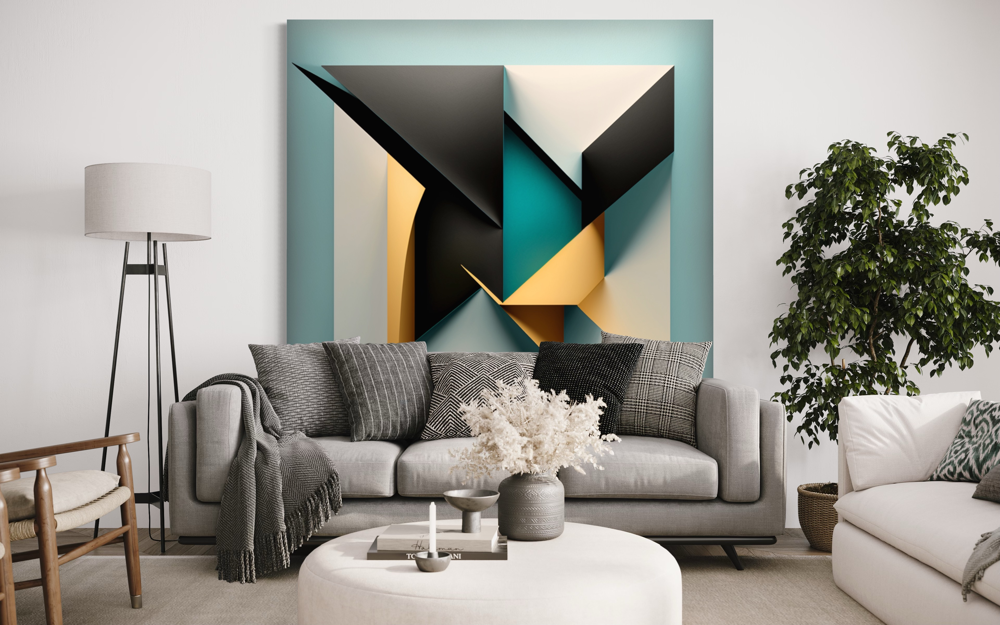

Private Distortion • Abstract Geometry • Simultaneità Intima
La Frammentazione dello Spazio e della Percezione
La pratica fotografica di Alberto Maccari si dispiega attraverso una genealogia della frammentazione — una investigazione sistematica su come il corpo, lo spazio e la percezione si disgregano, si ricompongono, sfuggono al possesso dello sguardo.
Non si tratta di rappresentazione, ma di messa in scena delle condizioni percettive. Ogni opera — dal corpo distorto attraverso il vetro alle forme geometriche pure ai vuoti dell'installazione — nega la totalità. L'intimità non risiede nella rivelazione, ma nella frattura.
Una serie fotografica che investiga il corpo non come oggetto statico, ma come campo fragile di percezione.
La distorsione ottica origina dal comportamento della luce attraverso il vetro — rifrazione come fenomeno fisico e concettuale simultaneamente. Il corpo fotografato frammentato, moltiplicato, impossibile da catturare in una sola visione.
L'intimità emerge dalla impossibilità di accesso — lo spettatore deve rallentare, ricostruire, rinunciare alla presa sicura.
La rifrazione ottica del vetro produce una decomposizione sistematica della figura umana. Non è casualità estetica, bensì logica interna di frammentazione.
Il corpo non appare mai intero. Fluttua tra visibilità e sparizione, resistendo alla certezza dello sguardo. Questa instabilità è il contenuto dell'opera: la percezione come processo, non come istantanea.
Da Private Distortion emerge la domanda: cosa rimane quando la rappresentazione è sottratta completamente?
Le forme geometriche pure non sono astrazione del corpo, ma astrazione della percezione del corpo. Sono ciò che rimane quando togli tutto tranne le linee di forza, le onde di accelerazione.
Una continuità diretta con Giacomo Balla: il movimento, l'energia, la dinamica sono i veri soggetti dell'arte.
Giacomo Balla insegnava che il movimento non può essere catturato nella staticità. La sua tecnica delle "linee di forza" decompone il corpo umano in vibrazioni, accelerazioni, onde simultanee.
Abstract Geometry continua questa lezione: forme pure che oscillano, si moltiplicano, creano l'illusione di energia perenne.
Non rappresentazione del movimento, ma rappresentazione della condizione percettiva del movimento.
Simultaneità Intima estende questa ricerca nello spazio fisico. Le forme geometriche appendono alle pareti bianche non come decorazione, ma come campo di forze abitabile.
Lo spazio stesso diviene il corpo. Le pareti bianche non sono sfondo neutro, ma partecipanti attivi: riflettono, assorbono, moltiplicano l'energia delle forme.
Lo spettatore che cammina nello spazio della mostra non vede mai la stessa opera due volte.

Forme geometriche nello spazio — il corpo assente come campo di forze

Lo spazio come percezione — simultaneità dinamica

Forme e architettura — il dialogo fra opera e spazio
L'intimità dalla percezione — ciò che sfugge al possesso

Lo sguardo rallentato — abitare lo spazio della forma
L'arte non rappresenta il mondo, mette in scena le condizioni percettive della sua impossibilità.
albertomaccariography.com